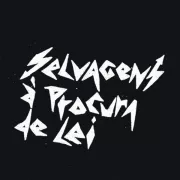

Mini biografia de Artistas
The 1975 é uma banda inglesa de pop rock formada em Manchester. O grupo é formado por Matty Healy, Adam Hann, George Daniel e Ross MacDonald.
Tendo anteriormente realizado um material liberado sob vários disfarces, incluindo "Talkhouse", "The Slowdown", "Bigsleep", "Blind Tapes" e "Drive Like I Do",
a banda finalmente entrou em acordo sobre o nome de "The 1975". Healy relata que o nome foi inspirado em rabiscos encontrados no verso de um antigo livro de poesia datada de "1 June, The 1975".

Priscilla Novaes Leone, mais conhecida pelo nome artístico Pitty, é uma cantora, compositora, produtora, escritora, empresária, apresentadora e multi-instrumentista brasileira.
Em uma entrevista, Pitty revelou que na adolescencia surgiu seu primeiro contato com a música rock: "Foi no começo da minha "vida mundana". De descobrir quem eu era. Já tinha escutado
algumas coisas de rock, minha mãe gostava de Beatles e de Raul, mas nessa época caíram nas minhas mãos umas fitas K7 e comecei: Pink Floyd, Metallica. “O que é isso? Que vigor!” Bateu".

Selvagens à Procura de Lei Selvagens à Procura de Lei (também chamada apenas de Selvagens, ou ainda SAPDL) foi criada por Gabriel Aragão (Guitarra, Teclado e Vocal), Rafael Martins
(Guitarra e Vocal), Caio Evangelista (Baixo e Vocal) e Nicholas Magalhães (Bateria e Vocal). Seus fãs também são conhecidos como "Mucambada". O grupo apresenta uma influência do Rock
nacional dos anos 80, com letras e arranjos muito pertinentes. Também é possível associar à banda, certa influência do indie rock dos anos 2000, como The Strokes e Arctic Monkeys.
Stefani Joanne Angelina Germanotta, mais conhecida pelo nome artístico Lady Gaga, é uma cantora, compositora, atriz, produtora musical e empresária estadunidense. mais conhecida pelo nome
artístico Lady Gaga, é uma cantora, compositora, atriz, produtora musical e empresária estadunidense. Influenciada por artistas como David Bowie, Michael Jackson, Madonna e Queen, Gaga é
reconhecida pelas suas contribuições extravagantes, diferentes e exageradas à indústria musical através da sua moda, actuações e vídeos musicais.
Entre em contato conosco atraves do nosso E-mail ou Tel:
E-mail: mariannamoreira74@gmail.com
Tel: (38) 991543454